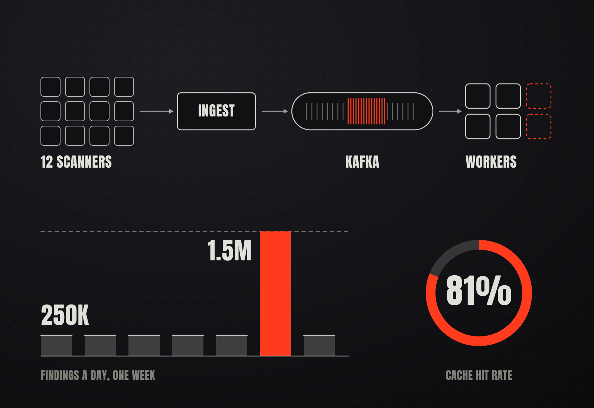

01Multi-tenant AppSec platform
Event-driven backend for an application-security product. Twelve scanners behind one execution engine, and an ingest path moved from SQS to Kafka to absorb a weekly burst from 250K to 1.5M findings a day.
- Client
- Armis, through Crest Data
- My role
- Backend architect. I led the ingest migration.
- Architected the backend as event-driven microservices: FastAPI, with Lambda → SQS → ECS Fargate, autoscaling and dead-letter-queue alerting.
- Built the engine that runs 12 SAST and DAST scanners, with unified finding normalisation, dependency chain resolution and SBOM/VEX generation.
- Built an on-demand scan API (S3-backed uploads, SQS-driven ECS) and container image scanning across AWS ECR, GCP GCR and Docker Hub.
- Built JWT and Basic auth middleware with rate limiting and cross-tenant isolation.
- Designed a Valkey cache holding about 4M live keys at an 81% average hit rate, 95%+ during full scans.
- Led the move of findings ingest from SQS to Kafka. It decoupled ingest throughput from the datastore's write capacity and ended burst throttling.
Python, FastAPI, AWS (ECS Fargate, Lambda, SQS, S3, DocumentDB, Valkey, ALB, ECR, EventBridge, Secrets Manager, CloudWatch), Kafka, Docker
Application Security